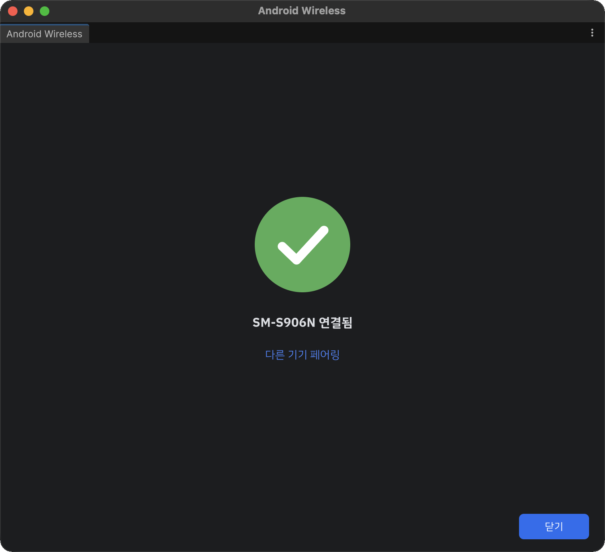
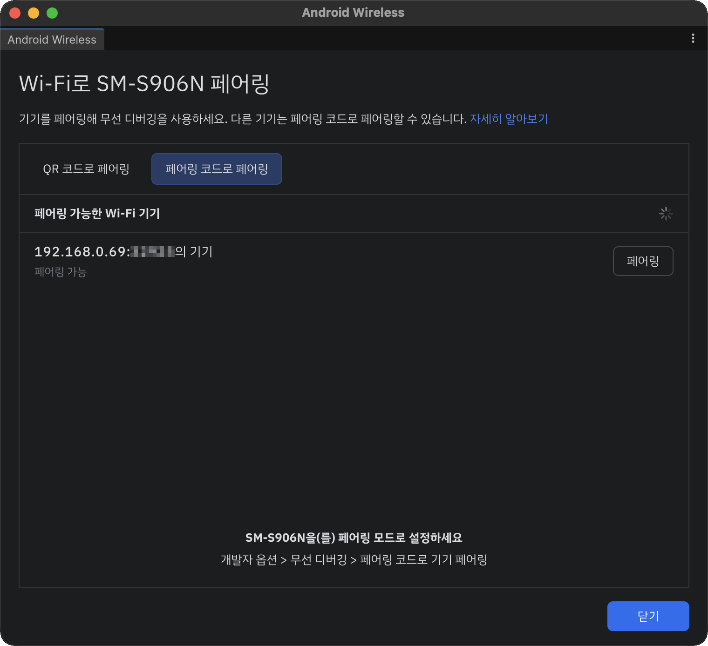
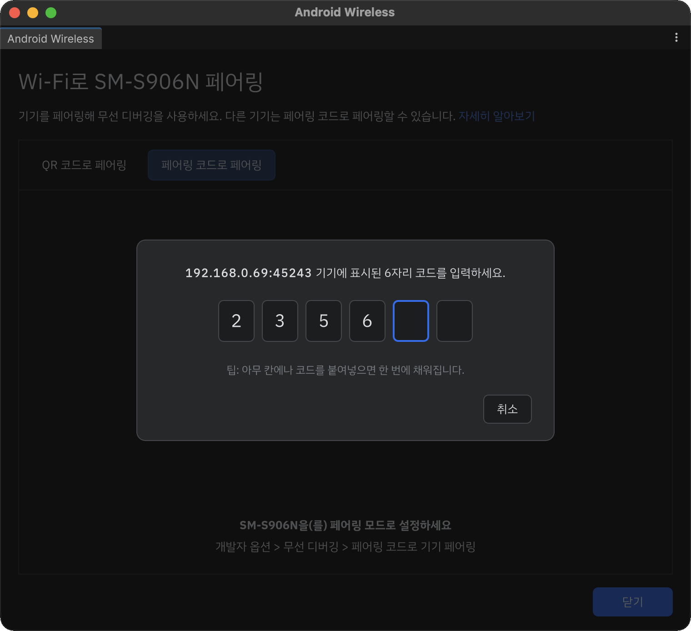

Connect a Device
Pair and connect an Android 11+ device over Wi-Fi. Once paired, the device reconnects whenever you turn on wireless debugging.
1. Prepare the device
- Connect your computer and the device to the same Wi-Fi network.
- Enable Developer options on the device.
- Turn on Settings > Developer options > Wireless debugging.
- When asked whether to allow wireless debugging on this network, tap Allow.
2. Open the window
In Unity, select Tools > Android Wireless Pairing. The first time, a theme selection screen appears. See Settings.
3. Device list
Devices with wireless debugging turned on appear in the list automatically. No refresh needed.

| Column | Description |
|---|---|
| Name | Device name |
| ADB Wi-Fi | ADB Wi-Fi version the device supports. v1.0 is a gray circle, v2.0 is green. |
| IP Address & Port | The device's wireless debugging address |
| API | Android API level |
- Devices that are already connected show Connected instead of the Pair button.
- Type a device name or IP in the search field to filter the list.
Note
Device name, API, and ADB Wi-Fi version require Platform-Tools 37 or newer. See Requirements.
4. Pair using QR code
- Click Pair next to the device. A QR code appears on the Pair using QR code tab.
- On the device, tap Developer options > Wireless debugging > Pair device with QR code and scan the code.
- Pairing and connecting happen automatically. A success screen appears when done.


5. Pair using pairing code
Use this when you can't scan the QR code.
Click Pair next to the device and select the Pair using pairing code tab.
On the device, tap Developer options > Wireless debugging > Pair device with pairing code. The device shows a 6-digit Wi-Fi pairing code.

The device appears under Available Wi-Fi devices in the window as Available to pair.

Click Pair and enter the 6-digit code shown on the device.
- Each box moves to the next one as you type.
- Paste the code into any box (Ctrl/Cmd+V) to fill all boxes and submit at once.

A success screen appears when pairing and connecting are done.
Click Pair another device on the success screen to return to the list.
Unpair a device
On the device, open Developer options > Wireless debugging > Paired devices, select your computer, and tap Forget. To unpair all computers at once, tap Developer options > Revoke USB debugging authorizations.